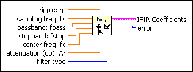

FIR Narrowband Coefficients VI
Owning Palette: Advanced FIR Filtering VIs
Requires: Full Development System
Generates a set of filter coefficients to implement a digital interpolated FIR (IFIR) filter.

 Add to the block diagram Add to the block diagram |
 Find on the palette Find on the palette |